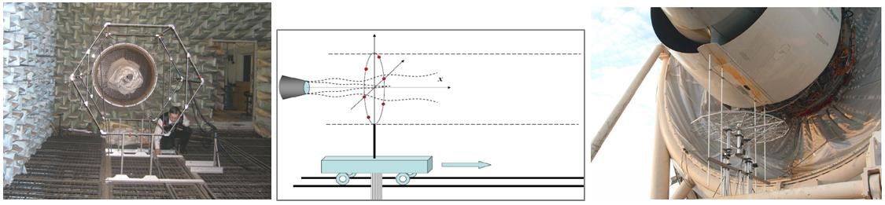
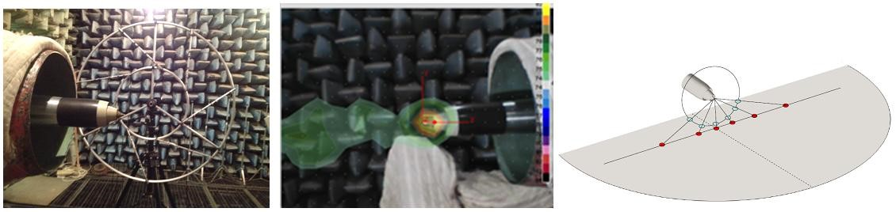
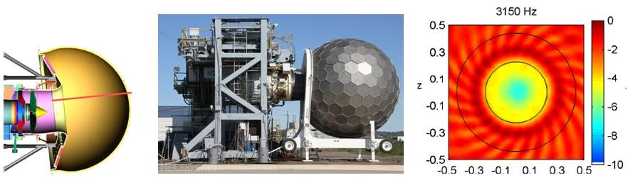
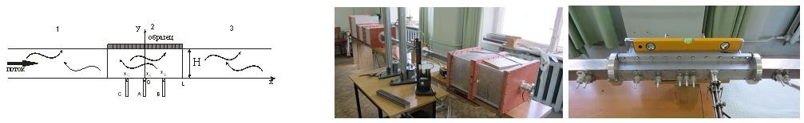

The problem of noise generation by turbulent flows is currently one of the most complex problems in fluid dynamics. This complexity stems, on the one hand, from essentially non-stationary character of noise generation mechanisms (NGMs), and on the other hand, from the fact that energy of acoustic perturbations comprises ~0.01% of kinetic energy of the turbulent flow, which renders identification of turbulent flow NGMs extremely difficult. To distinguish the sources that radiate sound in the farfield from non-radiating turbulence, it is necessary to develop special methods based on fundamental understanding of basic NGMs. Thus, the objective of the project consists in development of methods of identification of turbulent flow NGMs and application of these methods in laboratory and full-scale tests to decrease aircraft noise, which is a very urgent problem for modern Russian civil aviation due to ever-stringent norms imposed on community noise by International Civil Aviation Organization (ICAO).
Below, the main directions of work are given: a view from 2014
Organization of the laboratory based on a new anechoic chamber with flow. Base development for elaboration of multi-channel measurement methods in laboratory and full-scale tests.
Identification of noise sources and structures of noise radiating turbulence in application to turbulent jet. Adaptation of plane microphone array and azimuthal decomposition technique to investigation of noise content of aircraft engine in laboratory and ground rig tests.
Adaptation of cylindrical microphone array to measurement of azimuthal content of noise radiated from the aviation engine inlet. Search for the optimized position of microphones with the use of Bruel & Kjaer’s experience.
Development and manufacturing of acoustic liner samples, optimized on the basis of the results of azimuthal analysis. Numerical and experimental identification of sound field structure generated by powerful sound sources in the facility “Channel with flow”.
